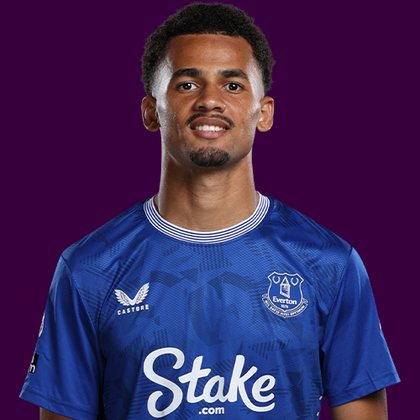

PITCHKEEP
Premier League ranks
Player File · MID EVE · Premier #24

Iliman Ndiaye
MID · Everton · age 26 · £6.0m
2025/26 Premier League
| Year | Starts | Min | G | A | xG | xA | CS | GC | Bonus | YC | Sleeper | FPL |
|---|---|---|---|---|---|---|---|---|---|---|---|---|
| 2025/26 | 32 | 2781 | 6 | 3 | 6.68 | 4.41 | 8 | 44 | 7 | 2 | 158.2 | 128 |
Plus
- Premier #24. Inside the first 50 of the 400-deep hybrid.
- 158.2 Sleeper BPL 2025 points (Pitch #54).
- 6 goals, 3 assists - enough attacking return to live on a 400.
- First-choice penalties.
- Consensus 23.57 vs Sleeper #54 - the industry still believes more than 2025/26 counted.
Minus
- Board spread 4–138 (Football Faithful to FPL EP Next).
PitchKeep Take · The Premier
Iliman Ndiaye is a midfielder for Everton, age 26, £6.0m. The Premier ranks him 24th overall by splitting Sleeper BPL 2025 (#54, 158.2 points) with the consensus of 7 other boards (23.57). The industry still has him 30 spots ahead of the 2025/26 Sleeper count. The Premier pays that reputation something, not everything. Brand does not outrun a down year, and a down year does not erase a player Everton still builds around.
The 2025/26 Premier League line is 32 starts and 2781 minutes, 6 goals and 3 assists, 67 tackles and 38 CBI. Official FPL scored it at 128 points (4.0 per match) with 7 bonus. Sleeper's table turned the same counting stats into 158.2. Midfielders get 9 a goal, 6 an assist, and 1 a clean sheet, plus a full tackle/CBI stream. That is why a six who plays every week can outrank a ten-goal winger who sits.
Underlying: 6.68 xG, 4.41 xA, 11.09 xGI. Set pieces: first-choice penalties for Everton. Role at Everton is the 2026/27 question sitting under the 2025/26 number. 32 starts is a starter. Anything under 25 starts is a rotation warning we already priced. Minutes are the skill that survives a finishing regression. The friendliest board is Football Faithful at 4; the coldest is FPL EP Next at 138.
Market: £6.0m, 14 boards on the file. That is leftover money for a Premier-ranked name. If the minutes hold, this board already voted. FPL's own EP-next is 2.1. ICT 166.5.
Instruction: treat him as a building-block, not a dart. Premier #24 is the band where you start the player every week in Sleeper. Nearby on The Premier: Kiernan Dewsbury-Hall, Matheus Cunha, Dominic Calvert-Lewin. Versus The Pitch (Sleeper-only #54), the hybrid moves him up to #24. That move is the third list doing its job.
He is 26, which on this board is neither a dart nor a warning label. Prime-age midfielders get ranked on what they just did and whether Everton still gives them the ball. 2781 minutes says yes. The 2026/27 FPL price (£6.0m) is the app's guess at whether that continues. The Premier is the blend of that guess and the box score.
How to use the file: The Pitch is the Sleeper-only 400 (he is #54 there). The Premier is the 50/50 with every other board we track. Attack, Midfield, Defence, and Keepers re-rank the same Sleeper table by position. BK Value on this page follows The Premier when you are on the hybrid calculator and The Pitch when you are on the Sleeper calculator. Same curve either way - 12,000 at 1.01. Unranked sources are skipped, never treated as 999, which is why a player missing from Yahoo's XI is not secretly ranked 400th.
Sleeper vs FPL
Same 2025/26 line, two scoring tables
Board graph
Spread 4–138 · 14 sources
Tape · 2025/26 Premier League
Iliman Ndiaye 2026 • Magic Dribbling, Goals & Assists | Everton ᴴᴰ
Every Board
Spread 4–138 · 14 sources
| Source | Rank |
|---|---|
| Football Faithful | 4 |
| The Independent Watchlist | 19 |
| Premier League Scout Selection | 19 |
| RotoWire FPL 400 | 23 |
| RotoWire Fantrax / Sleeper 400 | 23 |
| FPL Ownership | 27 |
| RotoWire GW1 | 28 |
| FPL xGI | 29 |
| FPL ICT Index | 36 |
| The Athletic PL 50 | 49 |
| Sleeper BPL 2025 | 54 |
| FPL 2025/26 Points | 60 |
| FPL Price Board | 80 |
| FPL EP Next | 138 |
PK News
- Football transfer rumours: Rafael Leão to Aston Villa? Harvey Elliott to Napoli or Lazio?
- Cody Gakpo: Tottenham interested in signing Liverpool forward as Roberto De Zerbi aims to improve Spurs attack
- Bournemouth v Everton, Coventry v Hull and more: football clockwatch – live
- Erling Haaland, Nico O'Reilly, Luke Shaw & Harry Maguire injury update ahead of Premier League 2025-26 Gameweek 29
- Manchester City & Arsenal lock horns in explosive £80m transfer showdown for Everton's Iliman Ndiaye
All players · The Premier · The Pitch · PK News · Calculator